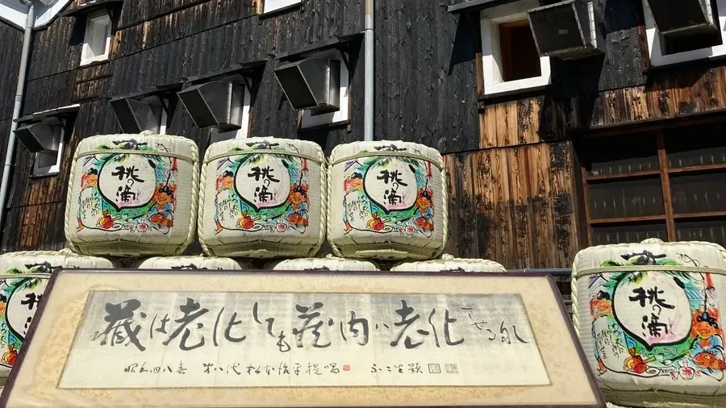
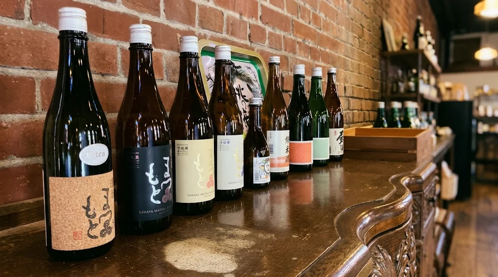

その一杯は執念か希望か。
山田錦の高温障害対策と、酒米の王を守る生存戦略

３月、京都伏見の酒蔵開き。熱気の中、ある日本酒ファンが杜氏に「米不足や価格高騰など、酒米の調達は大丈夫ですか？ 高くても美味しいお酒を買いたい」と問いかけました。杜氏も「良い米なら高くても買う」と応じます。

しかし農業の現場が直面しているのは、経済的な問題を遥かに超える「気候変動との絶望的な戦い」です。いま、酒米の王様「山田錦」の足元で何が起きているのでしょうか。
1. 山田錦の高温障害とは？ 猛暑で崩れる「酒米の王」の神話
長年、山田錦は「どんなに削っても耐え、最高の酒質を出す」最高峰の酒米として君臨してきました。しかしこの神話には、「出穂直後が暑すぎず、後半に冷え込んで米が締まる」という気候の前提条件があります。兵庫県も、山田錦の栽培適地である三木市・加東市周辺について、夏の昼夜の気温差が大きい中山間地であることが登熟や心白の発現に適していると説明しています。
近年の異常な猛暑は、この前提を完全に破壊しました。出穂直後に35℃を超える猛暑が続くと、米の内部構造は脆いまま固定されてしまいます。蔵元がどれほど精米技術を駆使しても、この初期不良は修正できません。「削るほど欠点が露出する米」へと変貌しつつあるのが、偽らざる現状です。
データもこの変化を裏付けています。加東市にある兵庫県立農林水産技術総合センター酒米試験地の報告では、田植えから成熟期までの平均気温が上昇傾向にあり、出穂後11〜20日の日平均気温が26.5℃を超えると、山田錦の白未熟粒が増えるとされています（「山田錦における高温対策について」）。全国的にも、農林水産省の「令和6年地球温暖化影響調査レポート」で、出穂期以降の高温による白未熟粒の影響が西日本の5〜6割の地域で報告されています。
山田錦の高温障害は、具体的には次のような形で現れます。
- 白未熟粒（乳白粒・背白粒など）：登熟期の高温でデンプンが十分に詰まらず、米粒が白く濁る。検査等級の低下につながる代表的な症状です。
- 胴割れ：米粒に亀裂が入る現象。高温に加えて刈り遅れや急激な乾燥でも起こりやすく、精米時に砕けて歩留まりを落とします。
- 心白の乱れ：山田錦の価値である中心の「心白」の形や大きさが揃わず、高精白に耐えにくくなります。
さらに、登熟期が高温だった年の米は醪（もろみ）で溶けにくくなるとされ、影響は田んぼだけでなく酒蔵の仕込みにまで及びます。
2. 山田錦の高温障害対策：「100点」を捨てる4つの生存戦略
自然の猛威に対し、農業単体で「100点」を狙うことは不可能です。いま農家に求められているのは、「負け切らない生存戦略」です。東条地域で取り組んでいる高温障害対策は、次の4つです。
- 作期分散（田植え時期をずらす）：「例年通り」を捨て、田植えの時期をずらしたり圃場ごとに分けたりして、出穂後の登熟期が猛暑のピークに重なるリスクを減らす。兵庫県の試験でも、遅植えで外観品質の向上が見込める一方、収量の低下には注意が必要とされています。
- 冷却装置としての水管理：水は栄養補給だけでなく、株元と地温を下げる手段として扱う。猛暑期は水を切らさず、温まった水を入れ替えることを重視する。
- 収穫・乾燥までの一体管理：刈り遅れや急激な乾燥は胴割れの原因になる。刈り取り適期の見極めから乾燥までの「間」を極限まで詰めて管理する。県の酒米試験地も、生育後半の肥効を保つことと適期収穫を品質維持のポイントに挙げています。
- 地域でのリスク分散：個人の農家ではなく、地域全体で作期や圃場を分け合い、全滅を防ぐ体制を構築する。
3. 水管理による高温対策：冷たい水を届ける「地下パイプライン」
なかでも私たちが注目しているのが、地下埋設パイプによる給水と自動開閉水栓の導入です。一見すると単なる効率化ですが、これが山田錦を救う戦略兵器になり得ます。
地下パイプラインを通すことで、真夏の用水路の温水化を防ぎ、冷たい水を直接田んぼへ供給できます。水切れによる地温上昇も自動水栓で防ぐことで、極端な高温障害を回避し、「酒蔵から選ばれる品質」を残す確率を大幅に引き上げます。
田んぼの水位を遠隔で見守る実証の様子は、「水位管理」が導くスマート農業の本質でも紹介しています。
4. 高温に強い次世代酒米：山田錦の遺伝子94％を引き継ぐ新品種への希望
さらに兵庫県では、猛暑に打ち勝つ強さを持ちながら、山田錦の遺伝子を94％引き継ぐ「次世代の酒米」の研究が急ピッチで進んでいます。
神戸新聞NEXT（2022年10月16日） 高級酒米・山田錦「８６歳」温暖化の試練 収量減や品質低下…迫る限界 高級酒米・山田錦のブランドに危機が迫っている。自然環境の変化などに対して７０年以上、品質を維持した稲の種類はほとんどなく…しかし、遺伝子が近くても厳密には別の品種です。消費者や酒蔵に「これこそが未来の山田錦だ」と愛されるブランドへ育てるには、膨大な時間が必要です。私たちは今、その「ブランド確立までの時間を稼ぐ」ために、既存の山田錦をテクノロジーと執念で守り抜こうとしています。
5. 執念か、希望か。最高の一杯を未来へつなぐ
私たちのミッションは、既存の山田錦を守り抜いて時間を稼ぎつつ、新品種の栽培と酒造りを酒蔵と共にゼロから積み上げることです。まさに針の穴を通すような挑戦ですが、日本の宝である「最高の日本酒」を次世代へ繋ぐための唯一の道です。

次にあなたが手にするその一杯は、
私たちが守り抜いた「執念」か、
未来を切り拓く「94％の希望」か。
どちらであれ、それは地域と伝統を守ろうとあがく人々が未来へつないだバトンなのです。
参考資料
- 兵庫県「兵庫の酒米」
- 兵庫県立農林水産技術総合センター 酒米試験地「山田錦における高温対策について」（近畿農政局「水稲の高温対策栽培体系への転換に向けたセミナー」講演資料）
- 農林水産省 近畿農政局「水稲の高温対策栽培体系への転換に向けたセミナーを開催」（2025年1月31日）
- 農林水産省「令和6年地球温暖化影響調査レポート」の公表について（2025年9月26日公表）
- 神戸新聞NEXT「高級酒米・山田錦「８６歳」温暖化の試練 収量減や品質低下…迫る限界」（2022年10月16日）

この記事を書いた「とうじょうRMO」について
岡本・森・南山の3地区が協力し、農地を守り、地域資源を活かし、暮らしを支える農村型地域運営組織（農村RMO）です。スマート農業とコミュニティの力で、山田錦の産地を次の世代へつなぐ挑戦をしています。
この挑戦の目撃者になりませんか？
とうじょうRMOでは、気候変動や担い手不足といった課題に対し、スマート農業やコミュニティの力で立ち向かっています。
私たちの活動の「いま」を、まずは公式LINEから覗いてみてください。